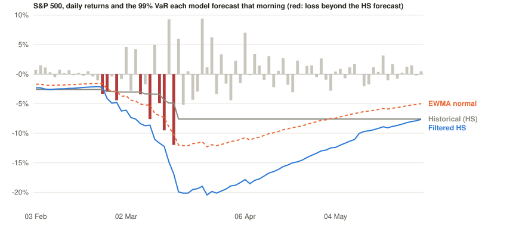
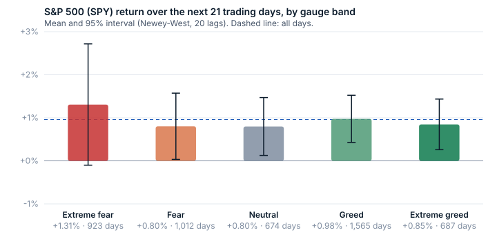
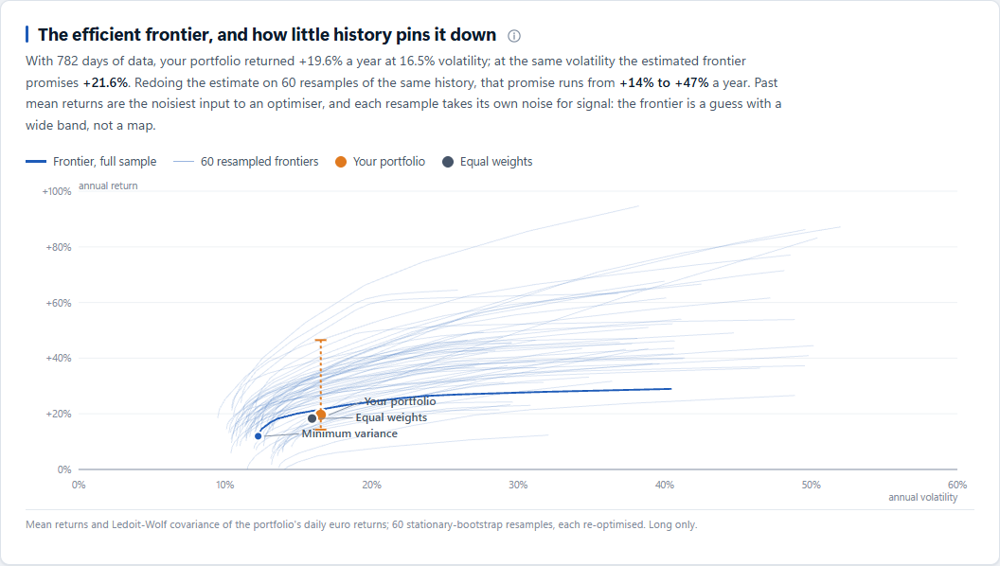

University of Trento, Department of Information Engineering and Computer Science
November 2026 · Code and data: github.com/brnhflow/projeto-quant
Abstract. Portfolio reports usually show risk and return estimates without saying how far to trust them. This note applies standard out-of-sample tests to three estimates such a report shows. First, one-day historical-simulation VaR keeps its promised breach rate on seven equity and crypto series from 2008 to 2026, but its breaches cluster on all seven; filtered historical simulation removes most of the clustering. Second, a five-part fear and greed gauge rebuilt from public prices has no detectable relation with S&P 500 returns over the next week, month or quarter from 2007 to 2026, and the best of ten timing rules chosen on the first half of the sample underperforms holding the index in the second. Third, re-estimating a long-only efficient frontier on bootstrap resamples of the same history moves the return it promises at a given risk by tens of percentage points. All results are reproducible from the public repository.
A risk figure on a screen looks equally confident whether it rests on a good model or on noise. This project, a portfolio analysis tool written for my own use, treats every estimate it shows as a claim to be tested on data it did not see. This note collects the three tests whose results changed what the tool shows: whether historical VaR fails at the right times (Section 3), whether a sentiment gauge carries information about future returns (Section 4), and how much of an estimated efficient frontier survives estimation error (Section 5).
Prices are daily closes from Yahoo Finance; index levels are in local currency, and exchange rates, where needed, are the European Central Bank reference rates. Every forecast for day t uses only data up to t − 1, and the software checks this by changing future data and asserting that past results do not move. The analysis is written in Python with a C++20 core for the resampling and rolling-window computations; both implementations are run against each other on every change, to 1e-12 or by the optimality conditions of the problem.
A one-day VaR at level α makes two promises: losses beyond it occur on a fraction 1 − α of days, and they occur independently. The Kupiec (1995) test checks the first, the Christoffersen (1998) test the second, and the Basel (1996) traffic light counts breaches in each rolling year at 99%. I compare three models with a 250-day window: historical simulation (HS), an exponentially weighted volatility with normal tails (EWMA, λ = 0.94), and filtered historical simulation (FHS), which takes the empirical quantile of returns standardised by their own day's EWMA volatility and rescales it by today's. The series are the Ibovespa, S&P 500, Euro Stoxx 50, FTSE 100, SMI, MSCI ACWI and Bitcoin, tested from July 2008 on 4,171 to 4,642 days each.
| Level, model | Breach rate | Kupiec pass | Christoffersen pass | Both | Years in red zone |
|---|---|---|---|---|---|
| 95%, HS | 5.25% | 7 / 7 | 0 / 7 | 1 / 7 | |
| 95%, EWMA | 5.54% | 3 / 7 | 4 / 7 | 1 / 7 | |
| 95%, FHS | 5.20% | 7 / 7 | 3 / 7 | 3 / 7 | |
| 99%, HS | 1.33% | 3 / 7 | 1 / 7 | 1 / 7 | 2.4% |
| 99%, EWMA | 2.15% | 0 / 7 | 5 / 7 | 0 / 7 | 4.9% |
| 99%, FHS | 1.26% | 4 / 7 | 4 / 7 | 4 / 7 | 0% |
Table 1. Series passing each test at the 5% level, out of seven, and the share of rolling 250-day years in the Basel red zone at 99%.
Historical simulation keeps its coverage at 95% on every series but fails independence on all seven: a 250-day window needs several extreme days before its 1% quantile moves, so breaches arrive in runs. In the 2020 crash the S&P 500 broke its 99% HS VaR 8 times between 20 February and 31 March. EWMA reacts within days but its normal tails are too thin, with a 99% breach rate between 1.6% and 2.4% on every series. FHS combines the two and is the only model with no rolling year in the red zone. Its cost is a larger VaR right after a shock: 10.9% on average on the S&P 500 from April to June 2020, against 7.6% for HS.

Figure 1. S&P 500 daily returns and each model's 99% VaR, early 2020.
The gauge averages five parts, each the percentile of today's value among the previous 504 trading days: S&P 500 momentum (level over its 125-day average) and strength (distance from the 52-week high), the VIX over its 50-day average (inverted), and the 20-day return of stocks and of high-yield bonds against 7–10 year Treasuries. It is available from 2 July 2007, giving 4,882 days to 24 November 2026. The outcome is the SPY total return over the next h trading days, h ∈ {5, 21, 63}. Because consecutive h-day windows overlap, standard errors are Newey and West (1987) with h − 1 lags, and p-values are adjusted with Holm (1979) within each family of tests.
| Horizon | Slope per 10 points | t | Holm p | R² |
|---|---|---|---|---|
| 5 days | −0.014 pp | −0.40 | 1.00 | 0.02% |
| 21 days | −0.051 pp | −0.46 | 1.00 | 0.06% |
| 63 days | −0.002 pp | −0.01 | 1.00 | 0.00% |
| 63 days, from 2010 | −0.44 pp | −2.38 | 0.051 | 2.3% |
Table 2. Forward SPY return regressed on the gauge. The last row leaves out 2007–2009; it was examined after the full-sample result.
Over the full sample the slopes have the contrarian sign but no statistical weight. Without the 2008–09 crisis the three-month slope becomes larger (t = −2.38), but on a subsample chosen after seeing the data and with a Holm-adjusted p-value of 0.051. Forward 21-day returns by band tell the same story: +1.31% after extreme-fear days against +0.96% on all days, with a difference of +0.43 points and t = 0.62.

Figure 2. Mean SPY return over the next 21 trading days by gauge band, with 95% intervals.
The practical test is out of sample. Ten rules, five that leave the market above a greed threshold and five that hold half the position except below a fear threshold, were compared on July 2007 to December 2017 with 5 basis points per unit traded. The best of them, out of the market above 80, had an in-sample Sharpe ratio of 0.51 against 0.47 for holding. From January 2018 it returned 13.1% a year against 15.6% for holding, at the same volatility; the probabilistic Sharpe ratio of its excess return is 0.001 and the deflated one (Bailey and López de Prado, 2014) is 0.00.
The long-only mean-variance problem, min ½ w′Σw − γ μ′w subject to 1′w = 1 and 0 ≤ w ≤ 1, is solved with two independent methods, a primal active set and accelerated projected gradient (FISTA; Beck and Teboulle, 2009), which agree to 1e-7 and pass the Karush-Kuhn-Tucker conditions. μ and the Ledoit-Wolf (2004) covariance Σ are estimated on the daily returns of the project's example portfolio. Repeating the estimate on 60 stationary-bootstrap resamples (Politis and Romano, 1994; mean block of 20 days) gives 60 frontiers.

Figure 3. Full-sample frontier (thick) and 60 resampled frontiers on the example portfolio, data to 25 November 2026.
On the example portfolio, at its own volatility of 16.5%, the full-sample frontier promises 21.6% a year; across resamples the promised return runs from 14% to 47% (5th to 95th percentile). Most resampled frontiers lie above the full-sample one, which is the optimiser's in-sample optimism described by Michaud (1989): each resample takes its own noise for signal and concentrates on the asset that happened to do best in it. The report therefore draws the frontier inside this cloud rather than as a single line.
Each of the three estimates looks precise on a screen and is not. Historical VaR is right on average and wrong exactly when losses arrive together; a widely quoted kind of sentiment gauge carries no usable timing information on nineteen years of data; and the efficient frontier estimated from a few years of returns is a wide band, not a line. None of these findings is new to the literature; the contribution is to apply the tests where the estimates are shown, so the reader of the report sees the test beside the number.
The seven VaR series are correlated, so they are not independent experiments. The gauge is a reconstruction, not the proprietary index it resembles, and its design follows an index published after many of the sample's events. The S&P 500 rose over most of the sample, which penalises any rule that leaves the market. The frontier result is shown for one portfolio. Free data have gaps and adjustment errors.
Bailey, D., López de Prado, M. (2014). The deflated Sharpe ratio. Journal of Portfolio Management, 40(5), 94–107.
Barone-Adesi, G., Giannopoulos, K., Vosper, L. (1999). VaR without correlations for portfolios of derivative securities. Journal of Futures Markets, 19(5), 583–602.
Basel Committee on Banking Supervision (1996). Supervisory framework for the use of "backtesting" in conjunction with the internal models approach to market risk capital requirements.
Beck, A., Teboulle, M. (2009). A fast iterative shrinkage-thresholding algorithm for linear inverse problems. SIAM Journal on Imaging Sciences, 2(1), 183–202.
Christoffersen, P. (1998). Evaluating interval forecasts. International Economic Review, 39(4), 841–862.
Holm, S. (1979). A simple sequentially rejective multiple test procedure. Scandinavian Journal of Statistics, 6(2), 65–70.
Hull, J., White, A. (1998). Incorporating volatility updating into the historical simulation method for value-at-risk. Journal of Risk, 1(1), 5–19.
Kupiec, P. (1995). Techniques for verifying the accuracy of risk measurement models. Journal of Derivatives, 3(2), 73–84.
Ledoit, O., Wolf, M. (2004). A well-conditioned estimator for large-dimensional covariance matrices. Journal of Multivariate Analysis, 88(2), 365–411.
Michaud, R. (1989). The Markowitz optimization enigma: is "optimized" optimal? Financial Analysts Journal, 45(1), 31–42.
Newey, W., West, K. (1987). A simple, positive semi-definite, heteroskedasticity and autocorrelation consistent covariance matrix. Econometrica, 55(3), 703–708.
Politis, D., Romano, J. (1994). The stationary bootstrap. Journal of the American Statistical Association, 89(428), 1303–1313.
RiskMetrics (1996). Technical Document, 4th edition. J.P. Morgan and Reuters.